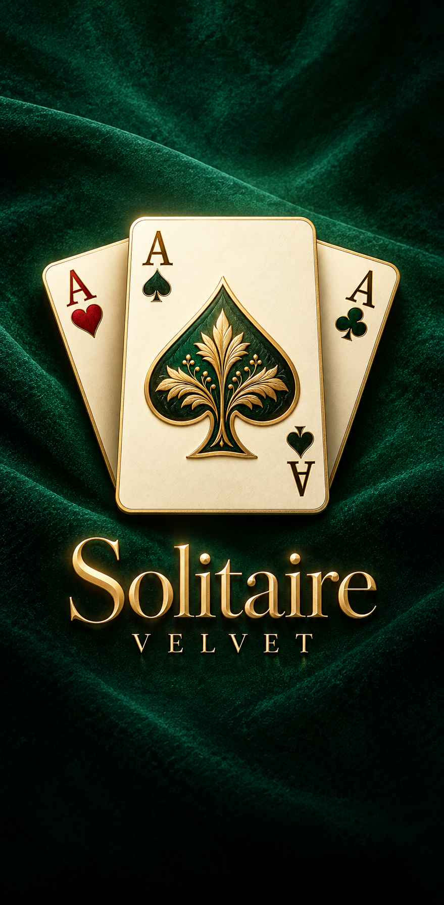

Build the columns
Tap or drag cards into descending order and alternate red and black. Move a king or a sequence headed by a king into an empty column.
Classic Klondike
Settle in for a hand of Klondike. Play the daily deal or make the table your own with velvet surfaces, illustrated cards and patterned backs.

The game
Tap or drag cards into descending order and alternate red and black. Move a king or a sequence headed by a king into an empty column.
Start a foundation with an ace and build it up to the king. Choose Draw 1 or Draw 3 in Settings to change how you draw from the stock.
Try a new daily hand and earn coins as you play. Pair a table with your favorite card faces and backs, or use a coordinated theme.
Player support
For a purchase issue or a problem with the game, email us with your device model, operating system and game version. You’ll find the version at the bottom of Settings.
Email supportOpen the in-game Shop and tap Restore Purchases at the bottom. Use the Apple or Google account that made the purchase. Eligible permanent items, including themes and No Ads, can be restored. Previously delivered coins are consumable and aren’t credited again.
Check the purchase status in your store history. Pending purchases are delivered after the store confirms payment. If the purchase is confirmed, reopen the game while connected. If the coins are still missing, email us the product name, purchase date and store order number.
No Ads removes the interstitial ads that play between hands. Rewarded videos remain available when you choose to watch them for coins, hints or help with a stuck hand.
Yes. The core card game and saved hands work offline. An internet connection is needed for store purchases, purchase restoration and rewarded videos.
Progress, coins and settings are stored locally. Solitaire Velvet has no game account or in-game cloud sync. Use Restore Purchases on the same store account for eligible permanent purchases.
Open Settings and choose Reset Progress. This clears the current hand, stats and game progress, including coins and unlocked looks, while keeping your settings and permanent No Ads entitlement. Eligible theme purchases can be restored from the Shop.
Evet. Cihaz modelini, Ayarlar ekranındaki oyun sürümünü ve yaşadığın sorunu uygulamadunyasi26@gmail.com adresine yazabilirsin. Kalıcı satın alımlar için oyun içi Mağaza’nın altındaki Satın Almaları Geri Yükle seçeneğini kullan.